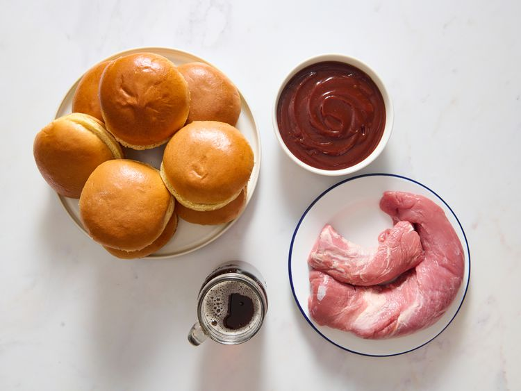
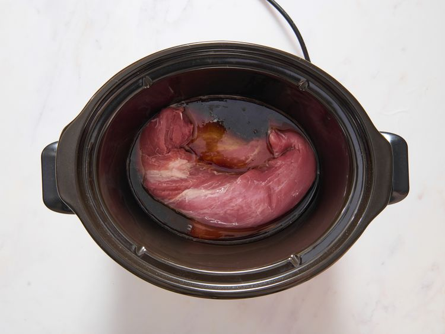
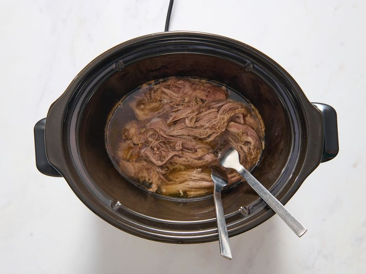
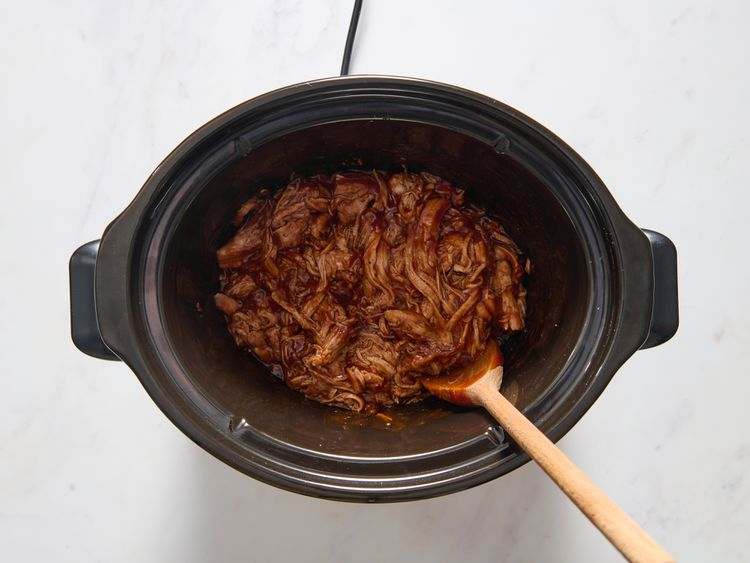
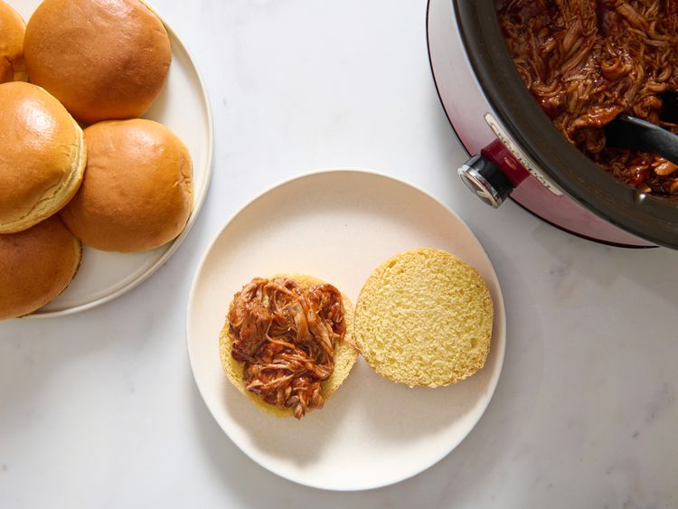
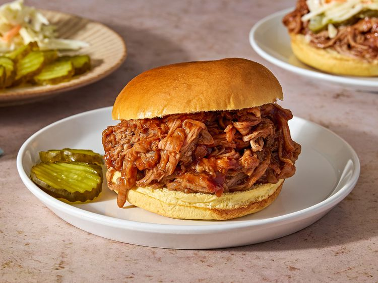

Slow Cooker Pulled Pork
Home
This easy slow cooker pulled pork recipe uses pork tenderloin and root beer to make the most tender shredded pork. Mixed with your favorite BBQ sauce, it is sure to bring rave reviews!
Ingredients
- 1 (2-pound) pork tenderloin
- 1 (12-fluid ounce) can or bottle root beer
- 1 (18-ounce) bottle your favorite barbecue sauce
- 8 hamburger buns, split and lightly toasted
Directions
Step 1
Gather the ingredients.
Ingredients to make slow cooker pulled pork.

Step 2
Place pork tenderloin in a slow cooker; pour root beer over top.
Pork and root beer in a slow cooker.

Step 3
Cover and cook on Low until pork shreds easily, 6 to 7 hours. Note: the actual length of time may vary according to the individual slow cooker.
Cooked pork in a slow cooker.

Step 4
Drain well. Stir in barbecue sauce.
Cooked pork BBQ in a slow cooker.

Step 5
Pile pulled pork onto hamburger buns.
Port BBQ on a bun.

Step 6
Serve and enjoy!
Slow cooker pulled pork on a bun.
